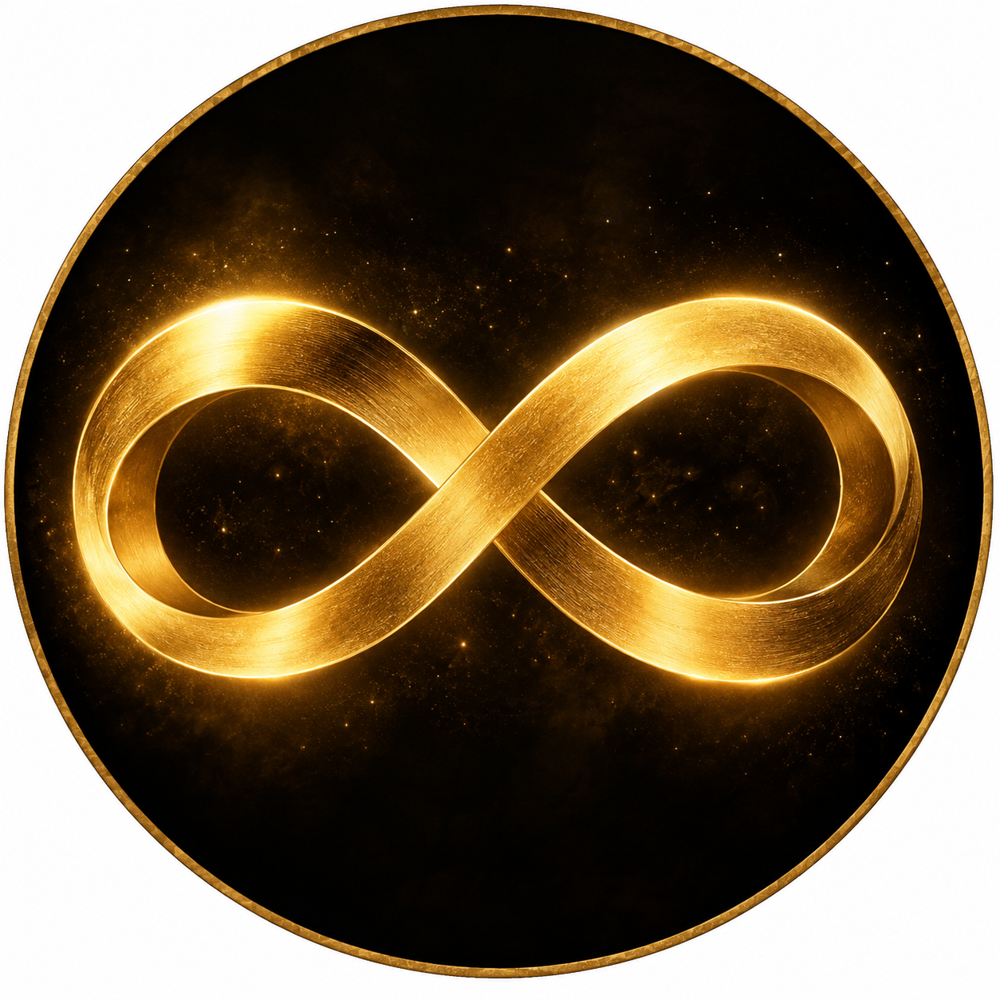
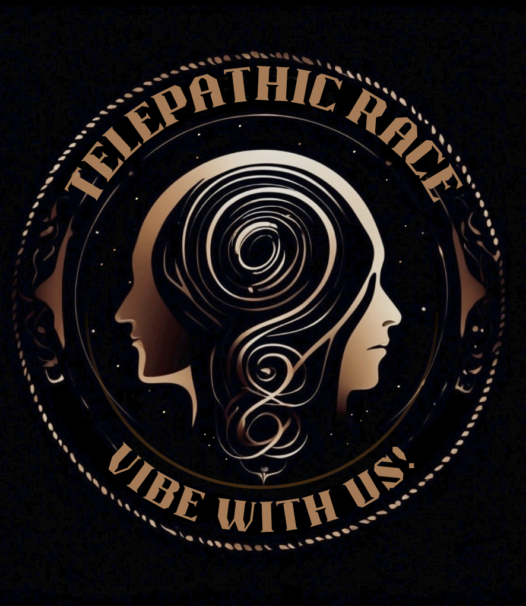

L2-L3 · Flow and Positioned Relationships
From Nothing to Revelation

0 — Nothing represents the ageless, empty space that all matter exists within. It is what exists before our conscious thought comes into being. Thinking of nothing can help strengthen mental focus. After a thought is realized, questioned, or acted upon, there is the possibility that thought might need to be returned back to Nothing. In Telepathic Race, zero provides that starting point.
1 — Thought begins when that stillness becomes conscious mental activity. Thought represents our conscious mental connection to the Creator through conscience. The thoughts we experience can influence our decisions, but having a thought does not mean that the thought should automatically be accepted as truth. Thought therefore leads naturally into the next vibration.
“Love is what we have when all the questions are over.”
2 — Question represents our ability to examine what we think and what we have been taught. Within the system, intelligence is the ability to question. This vibration asks readers to consider why questioning can sometimes be discouraged, particularly within religious environments where people may be expected to accept established beliefs. Questioning does not necessarily mean rejecting an idea. It can mean examining that idea closely enough to understand why we believe it.
3 — Love represents what remains when the questions are over. Love is closely connected with truth because much of what people first understand as true is communicated through those they love and those who love them. At the same time, people can accept different versions of truth without realizing how strongly perspective influences them. The vibration of Love therefore asks us to consider both our relationships and the ways those relationships shape what we believe.
4 — Revelation is represented as a doorway. Information can change the direction of a person's thinking when something previously unknown is revealed. A revelation can challenge an old perspective, answer a question, or create an entirely new one. The doorway symbolizes the movement from what was previously understood toward what can now be seen.
L4-L5 · Layers, Shapes, and Fallback
From People to Perfection

5 — People represents equality. One simple expression of this idea can be found in the familiar act of giving a friend “five.” The gesture brings two people together on the same level. Within the Ten Spiritual Vibrations, five represents recognizing other people as equals rather than placing ourselves above them.
That equality creates the contrast found in 6 — Snake. The Snake represents a downward spiral or a desire not to be equal with everyone. Where five emphasizes connection, six examines choices that move away from equality and toward power. The vibration becomes a warning wrapped in sensuality. It represents a secret.
7 — Leadership turns the movement in another direction. Leadership is about making the right decisions and moving toward the unfolding hand of an infinite Creator. Leadership in this sense is not simply having authority over other people. It is about direction, judgment, and responsibility for the choices that determine where a person goes next.
That direction leads toward 8 — Infinity, the highest representation of the Creator within the system. Infinity has no final boundary, while human minds and human lives do. This contrast leads directly into the ninth vibration.
9 — Death represents the finite nature of human existence. There are no more single digits after nine; the sequence has reached its end. Within the philosophy of Telepathic Race, Death also connects with consequences or karma resulting from choices represented by the sixth vibration. Death can therefore represent more than physical mortality. It can describe endings, consequences, painful experiences, and moments that force change.
Finally, 10 — Perfection begins a new scale. Ten is considered a perfect number because of its scalability. Perfection can also appear in moments rather than as a permanent human condition. Like when someone's favorite football team scores a touchdown and the referee runs out to signal with two raised arms and ten fingers held high. An athlete may experience another kind of perfect moment only after years of painful losses, mistakes, injuries, and other figurative “deaths” that helped shape the athlete into a champion.
The Ten Spiritual Vibrations do not end by suggesting that human beings remain perfect forever. Instead, Telepathic Race presents a cycle in which thought, questions, relationships, decisions, consequences, and growth can lead to moments of completion. From Nothing to Perfection, each vibration becomes another way of examining where we are, what direction we are moving, and what our choices may reveal.